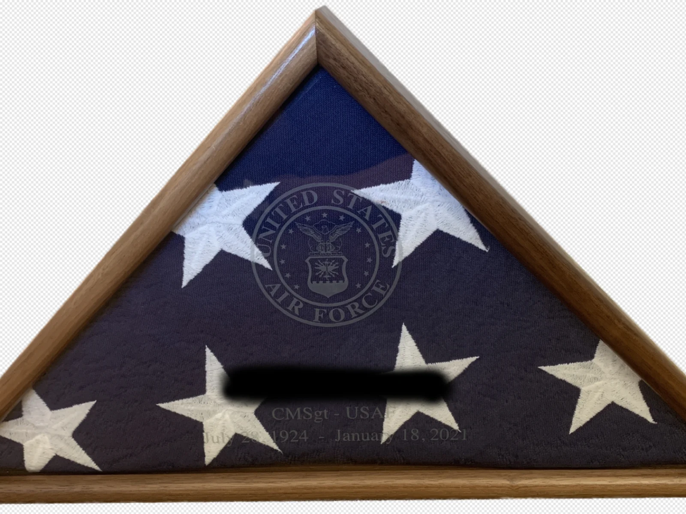
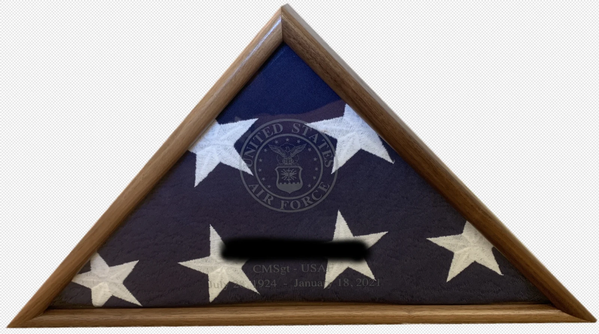
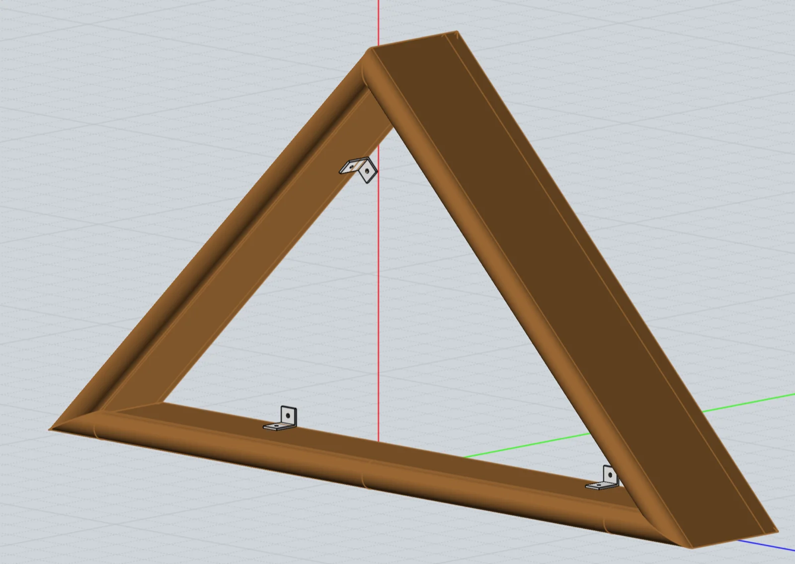
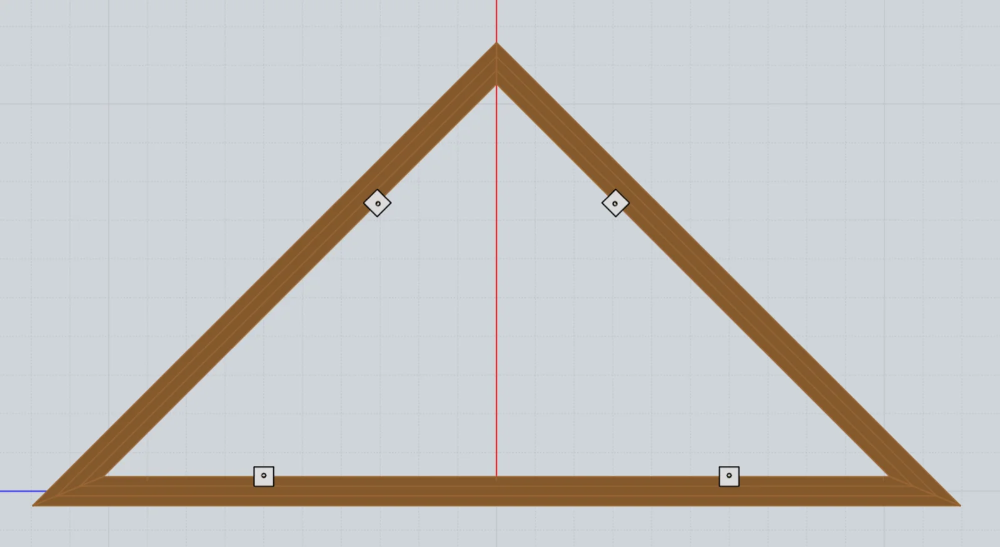
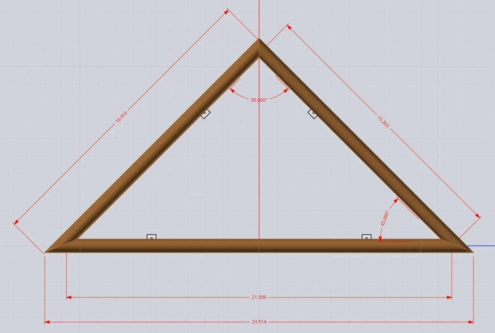

Flag Display Case
Includes the STEP CAD model, the glass panel etching design (EPS), and the instructions PDF.
{kind=link}

Honor your veteran with a beautiful hardwood flag display case, sized for a folded 5’ x 9.5’ official U.S. interment flag. Free 3D CAD files available.
My father-in-law recently died from COVID-19. So our family has joined the many families grieving their lost loved ones. As a USAF veteran myself, I am honored to present this display case on his behalf to honor him and his service to our country.
The following files are provided to help you create your own flag display case: the flag case instructions (PDF), and the design drawings (ZIP), which include a 3D CAD model (STEP file) and a glass panel etching design (EPS file).
Thank you to those who served! I sincerely hope this project helps you and your family honor your loved one and preserve your cherished memories.
Test-fit Case
Before building the display case I built a simple ‘test fit’ case using some MDF to ensure the folded flag would fit the design dimensions: 2 3/4″ x 21.5″ x 10 3/4″. The folded flag fit nicely, so these dimensions were used to construct the actual case.
Supplies
Materials & Hardware
- Frame bottom — 3/4″ x 3-5/8″ x 24″ walnut, 1
- Frame side — 3/4″ x 3-5/8″ x 17″ walnut, 2
- Frame back — 1/4″ x 22-11/16″ x 16-5/32″ plywood, 1
- Glass pane — 1/8″ x 21-1/2″ x 15-3/16″ glass, 1 (10-3/4″ triangle center height)
- Frame back mounting bracket — 1/16″ x 3/4″ x 1/2″ x 1/2″L aluminum L-bar, 4 (6-32 hole threaded)
- Wood screw — #7 x 1/2″ sheet metal screw, hex head, 4 (mounts bracket to side)
- Machine screw — #6-32 x 3/4″ brass, 4 (mounts back panel to bracket)
- Flat washer — #6 brass, 4
Consumables
- Titebond wood glue
- 150 grit and 220 grit sandpaper
- MinWax Clear Aerosol Lacquer (satin)
Tools
- Tablesaw, with dado blades (frame profile, back edge rabbet)
- Router (frame front edge)
- Tablesaw Vertical Tenon Jig (for the 22.5° corner miters — see the separate Tablesaw Vertical Tenon Jig project plan for jig details)
- Band clamp, plus 2 custom PVC corner clamps (1 1/2″ sch 40 PVC pipe, slotted)
- #6-32 tap
- Socket wrench
- Chisel (glass pane fit adjustment)
Pulled from the instructions PDF’s parts list and construction notes — see the downloadable PDF for the full exploded-view parts table.
Construction Tips
Frame Profile
The frame profile was cut first using a router for the front edge, and then using tablesaw dado blades to cut the 1/2″ thickness and the back edge rabbet used for the rear panel. Note that the 2 7/8″ interior space includes 2 3/4″ for the flag plus 1/8″ for the glass pane.
Tablesaw Vertical Tenon Jig
I needed to stand the pieces vertically to cut the 22.5 degree miters. So I built a Tablesaw Vertical Tenon Jig to cut the 22.5 degree miters for the two bottom corners. Reference the separate Tablesaw Vertical Tenon Jig project plan for jig details.
Frame Assembly
I first did a test assembly to correct any corner gaps to make the glue joints as strong as possible. Then the frame was assembled using Titebond wood glue, a band clamp, and two custom PVC ‘corners’ for the 22.5 degree corners. The PVC corner clamps were made using 1 1/2″ sch 40 PVC pipe with 1/2″ wide slots cut lengthwise. PVC edges were rounded to minimize marring the hardwood surface.
Tip: final assembly will be much easier if you pre-drill pilot holes for the back panel mounting bracket screws before gluing the frame pieces.
Back Panel Brackets
The four back panel mounting brackets were made using aluminum L-bar (dimensions: 1/16″ x 1/2″ x 3/4″). The 3/4″ length side of the angle ‘L’ is screwed to the frame. I used a #6-32 tap to thread the holes for the respective four #6-32 x 3/4″ machine screws.
Once mounted to the case frame, the bracket tops should be flush with the rabbet cutout in the frame, i.e., the back panel rests on both the rabbet cutout and the brackets.
Wood Finish
The assembled frame was finished by first sanding both the frame and back panel with 150 grit sandpaper. I spray painted the frame using MinWax Clear Aerosol Lacquer (Satin). The first coat was lightly sanded using 220 grit sandpaper before applying the final two coats.
Etched Glass Pane
A poster board template was cut using the interior dimensions of the case. After fine tuning the template size to match the actual case dimensions, a 1/8″ thick front glass pane was cut using the template as a guide. I then did a quick fit test to ensure the glass pane was the correct size — the fit was tight, but okay (more on that below). I then located a local trophy supplier that was able to do the glass pane laser etching. The etching was done on the back side of the glass pane using the downloadable EPS ‘etching’ file. I used Affinity Designer to create the etching design, but any program compatible with EPS files should work.
Final Assembly
- I carefully lowered the glass pane into the frame, but decided the fit was too tight. So I used a chisel to slightly enlarge the inside dimension where the glass fit.
- Next, the aluminum mounting brackets were screwed to the frame using a socket wrench and the #7 x 1/2″ hex head sheet metal screws. If you didn’t pre-drill pilot holes for these screws, you’ll need to drill them before mounting the brackets.
- A final flag inspection was done, and I then carefully inserted the flag into the case.
- The final step was to position and secure the back panel to the case using the #6-32 screws plus washers.
Final Thoughts
Thank you to those who served! I sincerely hope this project helps you and your family honor your loved one and preserve your cherished memories.
Image Gallery



